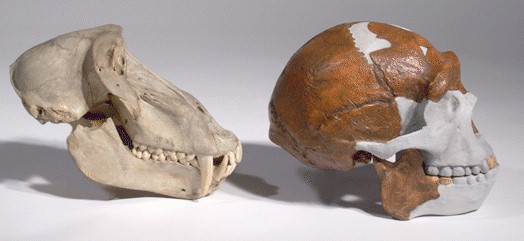

Kreationistische Argumente: Affen und Peking-Mensch
Some creationists, such as O'Connell (1969) and Bowden (1981), have claimed that the Peking Man fossils were actually those of monkeys. So that you can judge for yourself, here is the first ever, I believe, comparative photo of a monkey and Peking Man:

Das Schädelknochen links ist ein Affenschädel. Um genauer zu sein, stammt er von einem Pavian, was ihn für einen Affenschädel recht groß macht. Der Schädel rechts ist eine Rekonstruktion von Weidenreich, basierend auf den ursprünglichen Fossilien des Pekinger Menschen. (Bedenken hinsichtlich der Genauigkeit des Gesichtsabschnitts der Rekonstruktion können hier ignoriert werden, da wir uns nur mit dem Hirnschädel befassen, der im Wesentlichen vollständig war.)
Fragen Sie sich: Könnte irgendein Wissenschaftler die beiden oben gezeigten Schädel möglicherweise verwechseln? Sogar ein 4-jähriges Kind mit einem Mindestmaß an Intelligenz?
Kein Wissenschaftler hat je behauptet, dass die Schädel des Pekinger Menschen von Affen abstammen. Kreationistische Behauptungen im Gegenteil beruhen auf Falschdarstellungen der Arbeit von Wissenschaftlern wie Pierre Teilhard de Chardin und Marcellin Boule. Boule war stets der Meinung, dass der Pekinger Mensch zwischen Affen und Menschen intermediär sei. Bowden und O'Connell behaupten beide, Boules Artikel von 1937 in L'Anthropologie habe den Pekinger Menschen lediglich als Affen oder Affenwesen abgetan. Das ist nicht wahr, wie sich aus den folgenden Zitaten aus diesem Artikel ergibt:
"Morphologisch besteht kein geringster Zweifel. Sinanthropus bestätigt und vervollständigt die Demonstration, dass es Wesen gibt, die zwischen den Gruppen der anthropomorphen Affen und der Gruppe der Menschen liegen." (Boule 1937, S. 18, meine Übersetzung)Ich möchte mich bei dem Personal des American Museum of Natural History für die Gewährung des Zugangs zu diesem Material und für die Aufnahme dieses Fotos bedanken."In dieser Hinsicht [die Entwicklung des Gehirns] ist die kleine neue Gruppe, die wir untersuchen [Peking-Mensch und Java-Mensch], genau intermediär, da ihr durchschnittliches Hirnvolumen 1000 cc beträgt, um 400 cc höher als das maximale Volumen der Affen, das 600 cc beträgt, und um die gleiche Menge niedriger als der aktuelle menschliche Durchschnitt, der 1400 cc beträgt." (Boule 1937, S. 21, meine Übersetzung)
Referenzen
Boule M. (1937): Le Sinanthrope. L'Anthropologie, 47:1-22Bowden M. (1981): Ape-men: fact or fallacy? Ed. 2. Bromley, Kent: Sovereign.
O'Connell, P. (1969): Wissenschaft von heute und die Probleme der Genesis. Hawthorne, CA: Christian Book Club of America
Kreationistische Argumente über Peking-Mensch
Das „Affenzitat" von Marcellin Boule
Diese Seite ist Teil der FAQ zu fossilen Menschenaffen im TalkOrigins-Archiv.
Startseite |
Arten |
Fossilien |
Kreationismus |
Lektüre |
Referenzen
Illustrationen |
Neuigkeiten |
Feedback |
Suche |
Links |
Fiktion
http://www.talkorigins.org/faqs/homs/monkeypeking.html, 08/14/98
Copyright © Jim Foley
|| E-Mail mir